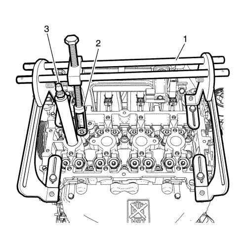
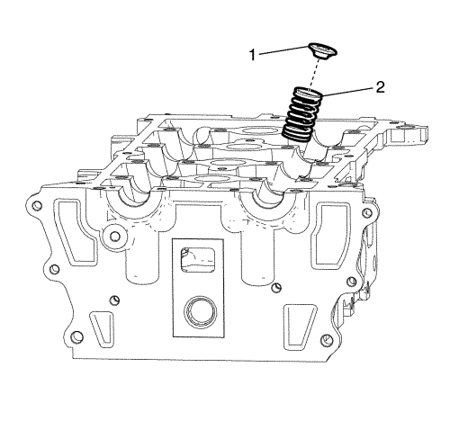

Sustitución del muelle de válvula y del retén de aceite del vástago de válvula
Herramientas especiales
| • | EN 46116 Herramienta de desmontaje y montaje de la junta de vástago de válvula |
| • | EN-49075 Adaptador del compresor de muelles de válvula |
| • | EN-49076 Adaptador de presión del cilindro |
| • | EN-50173 Compresor universal de muelles de válvula |
| • | KM-845 Dispositivo de succión del levantaválvulas |
Si desea informarse sobre herramientas regionales equivalentes, consultar Herramientas especiales .
Procedimiento de desmontaje
- Desmonte el árbol de levas. Consultar Sustitución del árbol de levas .

- Desmonte el levantaválvulas de la válvula (1) utilizando un dispositivo de succión de levantaválvulas KM-845.

- Monte el compresor de muelles (1) de válvula universal EN-50173 y el adaptador (2) del compresor de muelle de la válvula EN- 49075.
- Desmonte la bujía y monte el adaptador de presión del cilindro EN-49076.
- Conecte el tubo flexible del aire comprimido al adaptador de presión del cilindro EN-49076. Impide que la válvula se deslice dentro del cilindro soplando aire comprimido dentro del mismo.
- Utilice el imán para desmontar el collar de la válvula.

- Desmonte el retenedor (1) y el muelle de la válvula (2).

- Desmonte la junta del vástago de la válvula (2) utilizando la herramienta de desmontaje/montaje EN 46116 (1) destinada a tal fin.
Procedimiento de montaje
- Desmonte la junta del vástago de la válvula (2) utilizando la herramienta de desmontaje/montaje EN 46116 (1) destinada a tal fin.
- Monte el muelle (2), el retenedor (1) y la junta de la válvula.
- Desconecte el tubo flexible del aire comprimido del adaptador de presión del cilindro EN-49076.
Precaución: Consulte Precaución con las fijaciones en la sección Prólogo
- Desmonte el adaptador (3) de presión del cilindro EN 49076, instale la bujía y apriétela a 27 N·m (20 lib. pie).
- Desmonte el compresor de muelles (1) de válvula universal EN-50173 y el adaptador (2) del compresor de muelle de la válvula EN-49075.
- Instale el taqué de válvula (1).
- Monte el árbol de levas. Consultar Sustitución del árbol de levas .
| © Copyright Chevrolet Europe. Reservados todos los derechos |